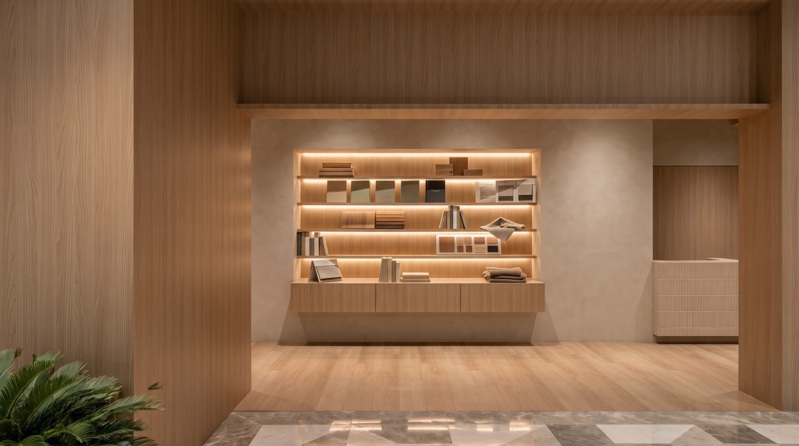
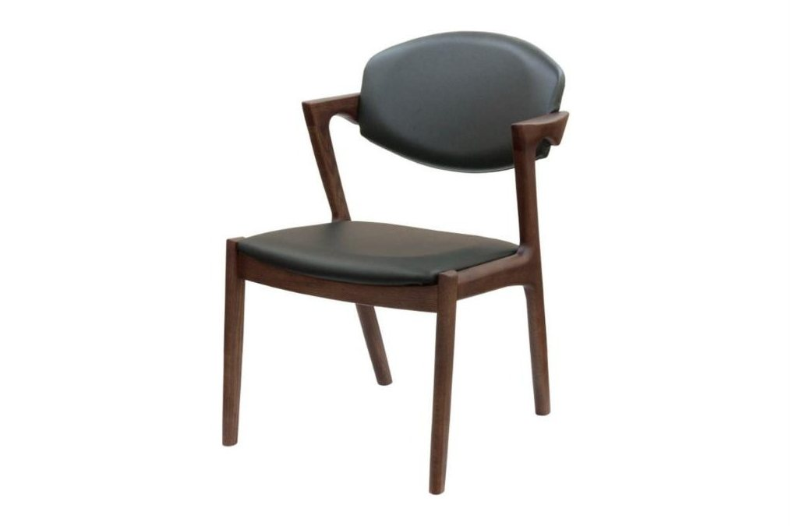
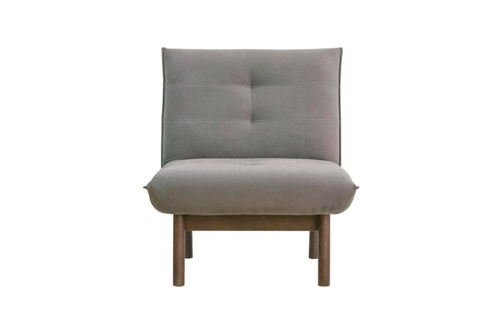
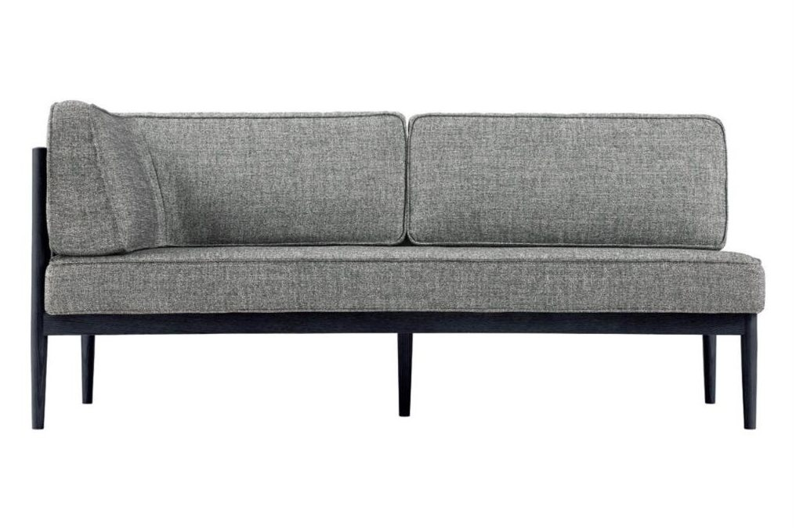
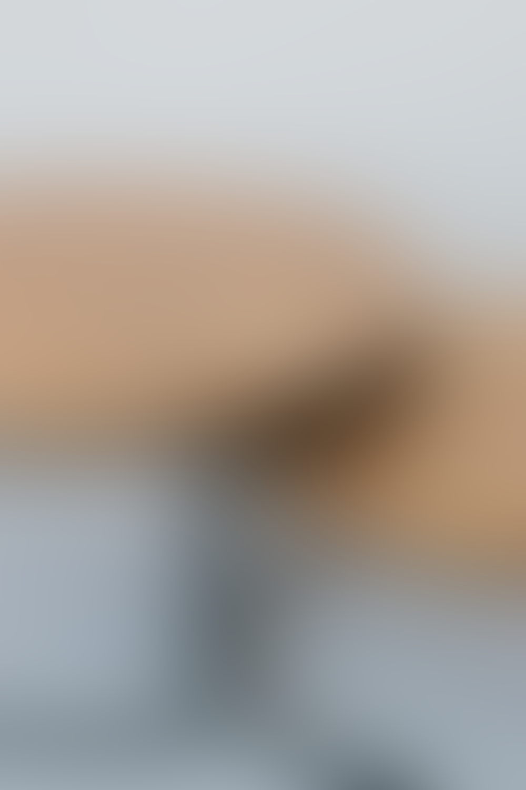

Vật liệu & Craftsmanship
Chọn kỹ từng tấm gỗ, từng tấm da, để món đồ càng dùng càng đẹp.
Khung gỗ sồi và bốn loại vải bọc theo catalogue Hamamoto. Mã màu trên màn hình chỉ mang tính tham khảo; hãy xem mẫu thật tại showroom.
Gỗ sồi & màu sơn khung
Khung và chân bằng gỗ sồi (Nara), hoàn thiện sơn PU. Ba màu sơn tiêu chuẩn áp dụng chung cho các sản phẩm dùng khung dòng No.3000 Living Dining; một số mẫu khác dùng thêm màu BK (đen) hoặc PR.
Da thật Leather
Hamamoto Kougei sử dụng da thật dày 1,3–1,4mm, giúp duy trì cảm giác cao cấp trong thời gian dài, và có thể tận hưởng sự thay đổi của bề mặt da theo thời gian sử dụng. Bề mặt được xử lý dập vân nhân tạo, tạo cảm giác vân da độc đáo. Lớp phủ dày giúp da chống bẩn tốt và dễ bảo quản.

Da trơn Smooth Leather
Loại da thật cao cấp, qua tuyển chọn khắt khe, chỉ khoảng 20 trên 100 tấm da đạt tiêu chuẩn. Chú trọng giữ nguyên vân da tự nhiên, lớp phủ mỏng hơn thông thường để giữ tối đa cảm giác da nguyên bản. Bề mặt phủ lớp urethane, tăng độ bền mà không làm mất đi vẻ đẹp và độ mềm mại của da.

Dinamica
Đặc trưng bởi khả năng chống bẩn và chống trầy xước. Nhờ xử lý chống thấm nước ban đầu, vết bẩn có thể dễ dàng lau sạch. Lớp bề mặt dùng vi sợi (sợi siêu mịn) dày đặc, tạo cảm giác mịn màng khi chạm vào; các sợi đặc biệt trong vật liệu mang lại khả năng chống trầy xước vượt trội. Đạt tiêu chuẩn sử dụng cho sản phẩm dành cho trẻ dưới 3 tuổi.

AquaClean
Khả năng bảo quản vượt trội: làm sạch vết bẩn trên vải bọc chỉ bằng nước, kể cả vết thức ăn hay dầu nhờn cơ thể. Là vải flock (phủ lông tơ) không dệt từ sợi dọc và sợi ngang, nên chống trầy xước từ móng vuốt thú cưng rất tốt. Bề mặt dập hoa văn mica mỏng, tạo vẻ ngoài có chiều sâu và sắc độ.

Kỹ thuật
Mặt ghế lò xo túi hoặc lò xo chữ S kết hợp đệm urethane nhiều độ cứng, hạn chế cảm giác "chạm đáy". Vỏ bọc vải, Dinamica và AquaClean tháo rời giặt được. Gầm ghế thấp và phẳng, đủ cho robot hút bụi đi qua. Bề mặt kệ và veneer phủ UV chống trầy xước.
Xem sản phẩm